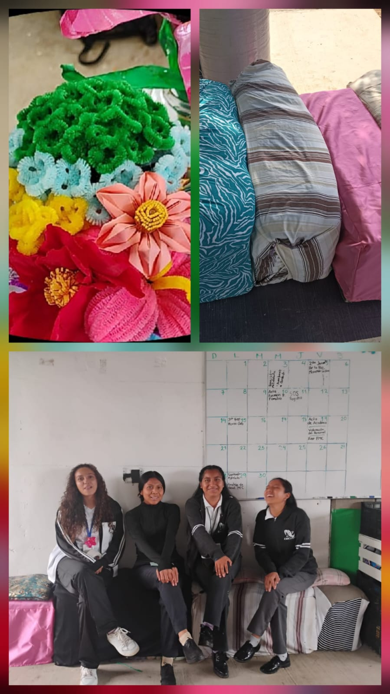

¿a que se refiere "el proyecto pec"?
el proyecto escolar comunitario, como sus siglas lo mencionan surgió desde la nueva modalidad de la nueva escuela mexicana, con el proposito de que los estudiantes de los emsad´s y planteles tengan mas acercamientos con la comunidad, identificando problematicas que se encuentran en el sitio donde se encuentra su institución
¿De qué se trato el proyecto PEC?
El proyecto que se organizo para el ciclo 2026-1 fue de crear nuevos articulos, darle una segunda oportunidad a cosas que para algunos ya se considerarian basura. Todo esto seria cambiado por tapitas de plastico y estas mismas serian donadas a la fundación "Con causa", que se encarga de ayudar a niños que padecen cáncer.
Con la orientación de los docentes y la ayuda e ingenio de los estudiantes se elaboraron sillones,tapetes, flores. Gracias a este proyecto se pudo ver el compromiso de los estudiantes para con la comunidad, ademas de la creatividad de cada uno de ellos
